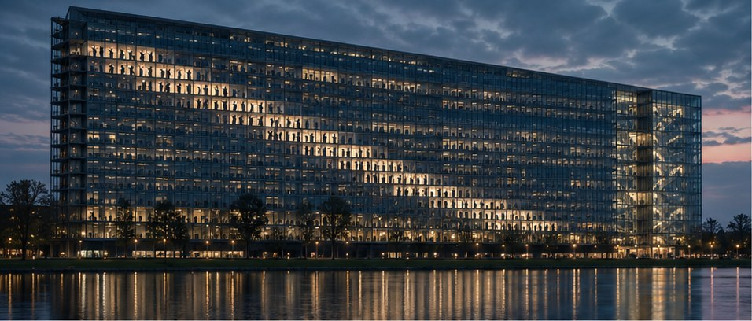
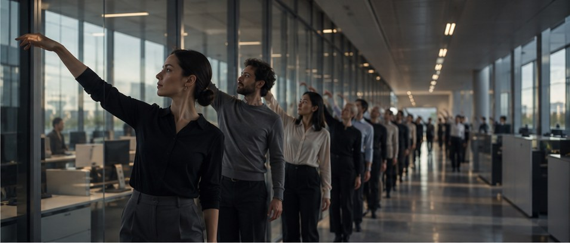
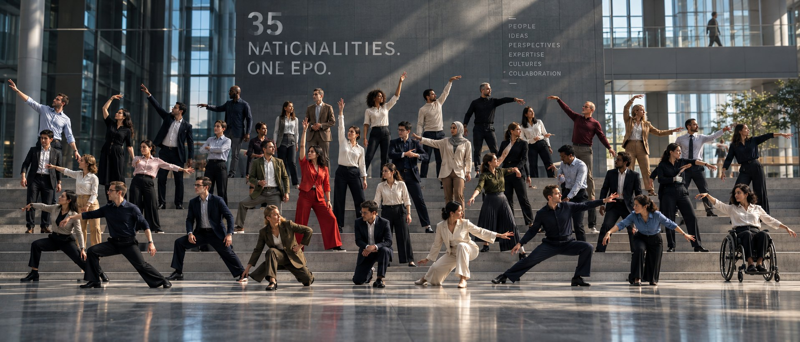
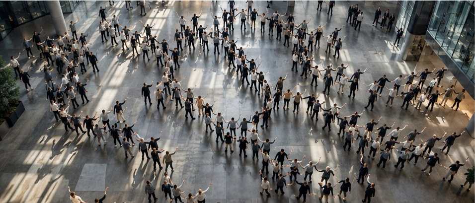
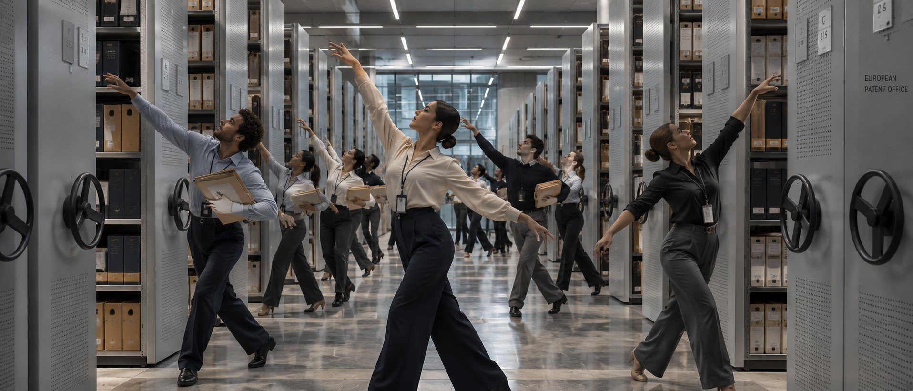

Creative
Studio
EPO 50 · Since 1977
EPO
in motion.
Moving ideas forward. An anniversary film choreographed by the people of the European Patent Office.

Creative
Studio
01 / The organisation
An organisation
made of people.
Knowledge and co-operation across Europe. Headquartered in Munich, with a branch in The Hague and offices in Berlin, Vienna and Brussels.
4,000+
scientists and engineers examining patents
Source: epo.org, October 2026

Creative
Studio
02 / The insight
For 50 years, the EPO has been about movement.
Ideas move forward.
Knowledge moves between people.
Perspectives come together.
Thousands of people across Europe work as one.
For the 50th anniversary, we make that movement visible through movement itself.

Creative
Studio
03 / The idea
We turn the EPO into one great choreography.
Performed by the people who make the organisation what it is.
Creative
Studio
04 / How it unfolds
From the ordinary to the extraordinary.
One gesture
One team
One department
One building
One city
Europe
Everyone
What looks like an ordinary working day slowly reveals itself as choreography.

Creative
Studio
05 / 35 nationalities
Not uniformity.
Coordination.
At first every movement is individual, with different rhythms, gestures and people. Gradually they respond to one another. Groups form, patterns emerge, and individual gestures become one collective movement.
Creative
Studio
06 / The iconic image
Buildings come alive.
In The Hague we pull back until people become small figures in the glass façade. One person moves. Another responds. The movement travels from window to window and floor to floor, until the whole building seems to dance.

Creative
Studio
07 / Across Europe
One movement
across Europe.
The choreography doesn't stop at one building. A movement starts in Munich and lands in The Hague. Someone turns a corner in Berlin, and the gesture continues in Vienna, then Brussels.
Munich
The Hague
Berlin
Vienna
Brussels
Creative
Studio
08 / Why dance
Physical. Human.
Unexpected.
Joyful. Alive.
An anniversary film about patents could easily turn retrospective and institutional. We want the opposite. Dance needs no translation. It brings energy, humour and emotion, and gives employees a reason to take part instead of just appearing.
The making-of becomes part of the idea

Creative
Studio
09 / Movement language
We don’t teach the EPO a dance.
We turn its work into movement.
A hand passes a document. Two people compare. A group gathers around an idea. With a leading choreographer, these real gestures become a movement language that belongs to the EPO and nobody else.
Small gestures grow into larger movements. Movements become patterns, and patterns become systems. In the end, hundreds of individuals create something only collaboration can achieve.
Creative
Studio
10 / The climax
Everyone moves together.
Hundreds of colleagues in one flowing formation. The camera rises, and individuals become one collective movement. The emotional climax of the film.
Creative
Studio
11 / Participation
The employees create
the anniversary together.
Employees aren’t interviewed about what the EPO means to them. They become the protagonists. Learning and performing the choreography is an internal event in itself, connecting departments, generations, professions, nationalities and locations.
The anniversary begins long before the film is released.

Creative
Studio
12 / Campaign system
One hero film.
Hundreds of moments.
The monumental choreography is the hero film. But the idea is built as a system, not a single asset.
Spaces
Archive, library, canteen, office
Locations
Munich, The Hague, Berlin, Vienna, Brussels
People
35 nationalities, employee portraits
Process
Rehearsals and behind the scenes
Distribution
Social cut-downs and location edits
Creative
Studio
13 / What it makes possible
One idea. Many effects.
01
Every nation on screen
All 35 nationalities at the EPO, visible side by side.
02
Five locations, one space
Munich, The Hague, Berlin, Vienna and Brussels in one flow.
03
Fun to take part
Employees join in instead of posing. Rehearsals become an experience.
04
A shared sense of community
Departments, generations and professions move as one.
05
Open to everyone
Every role, age and ability can join in.
06
Social media content
Snippets, reels and location edits from one shoot.
07
A human employer brand
A modern, human workplace for staff and future talent.
08
A lasting legacy
The films stay in use after 2027, for example to welcome new colleagues.
Creative
Studio
14 / Roadmap
Four ways to make it. One we recommend.
Every option is built on the real EPO locations. AI can support individual shots in any of them; the heart of the film stays human.
OPTION 01
Choreographer + employees
EPO employees learn and perform the choreography on location. The most authentic option: the rehearsals become an internal event.
OPTION 02
Choreographer + professional dancers
Professional dancers perform at the real EPO locations. Maximum precision and visual impact; staff watch rather than join.
OPTION 03
Recommended
Choreographer + employees + selected performers
Real EPO employees carry the film. Selected professional performers take on the demanding passages. Authentic and precise.
OPTION 04
Full AI video
The film is generated with AI, built on the real EPO locations. Fast and flexible, but no one takes part.
Creative
Studio
EPO
in motion.
50 years of people moving ideas forward. Together.
EPO 50 · Since 1977 · A concept by Ivory Creative Studio